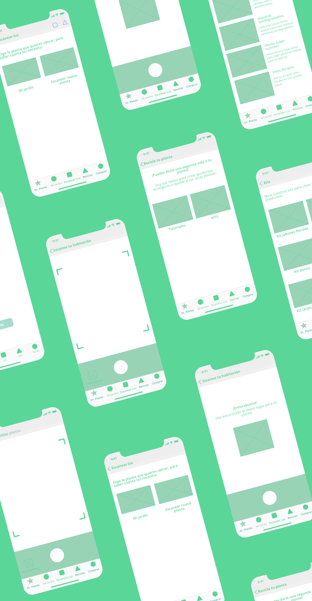

Dr Planta App
This time I had the opportunity to be part of a team in which we had the challenge of improving the experience of flower-loving users. We all know how delicate a flower or plant is, the care it requires and how difficult it is sometimes to keep them healthy. This was the result of more than 100 hours of work.
About the App
Dr Planta is an App that helps users to diagnose diseases, bugs and pests on plants thanks to the scanner that allows you to check the condition of its leaves, usign Augmented Reality. In this way, users can scan the spaces of the house in search of the place with the specific amount of light for each type of plant. And it gives you the remedies that helps you every time.
The challenge
Due to the current situation of the pandemic, the world has had to rethink what it had been doing, since many businesses, having no presence on the web or not being prepared for digital demand has undergone irreparable changes, as has been the case in the flower sector. We have the challenge to improve the UX in the floral industry, using Design Thinking methodology.
The process
As I said, we carried out this project using Design Thinking. To the development of Dr. Planta, we divide the work following the steps: Emphatize, Decide, Ideate, Prototype and Test.
The project had a duration of +130 hours, led by a group of 4 UX/UI designers.
- UX Research
- Personas, User Journey, Empathy Map
- Detection of Insights, HMW, Value Proposition
- Storyboard and Conceptual Moodboard
- UI Development: Style Guide and Prototyping
- User Test and iteration
Survey & Interview
We made a survey to +100 people. As for the interview, using the same approach of the victorious questions of the Research Questions, we made our script. The deep interview helps to know the users better and obtain valuable information, such as their motivations and frustrations that will help us solve our problem later on. We selected 3 people who met the characteristics of our potential users.
“ Empathy is at the heart of design. Without the understanding of what others see, feel, and experience, design is a pointless task.”
User Persona

User Journey Map, Flowchart and IA
I defined the steps that I had to take to achieve a specific objective and thus have a clearer vision.
Storyboard
Wireframes
The time has come to create the structure of the App in digital. In this way, it could be checked if it fulfilled the requirements. After this, I made the wireflows to determine the effectiveness of the structure flow.

Prototype
Click below for full research :)
Key takeaways
- If we want to satisfice the users’ necessities, we have to focus on them.
- A good research and a strong investigation, allows you to understand and get a wide view of the path that you have to follow to give your project the consistency that it needs.
- Following all the steps of the Design Thinking methodology, you can achieve a very valuable product.